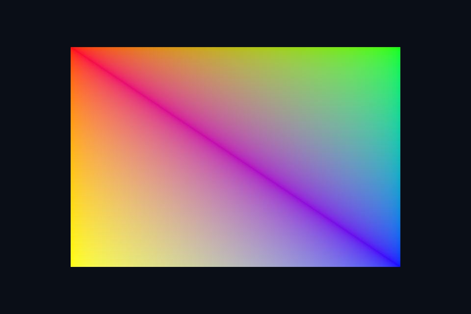

vk04_vertex_buffer · 顶点缓冲与布局
路线首页 · 上一课 · 下一课
构建和运行
从仓库根目录执行，完成配置后后续只需 build：
cmake --preset vulkan-native
cmake --build --preset vulkan-native-debug --target vk04_vertex_buffer --parallel 4
.\Vulkan\native\build\bin\Debug\vk04_vertex_buffer.exe
也可以通过根目录“开始学习.cmd”打开页面后点击“运行本课”。01/08 是控制台计算/设备检查示例，点击后可用“查看运行输出”阅读结果。其余示例 Esc 退出，拖动窗口可测试尺寸重建。
预期结果：彩色矩形，由六个非索引顶点组成。
先读哪些代码
shared/scene.hpp::geometry(4) → VkBufferResource::init/upload → vertex attributes/stride → vkCmdBindVertexBuffers。
本目录 main.cpp 选择本课的执行路径。完整 API 实现在 common/native_app.hpp 与 ../common/scene_vk.hpp（相对路线根目录），数学和网格在仓库 shared/scene.hpp。每课都是独立程序；共享代码避免把相同资源生命周期错误复制十遍，也会为后续课预先初始化部分公共状态。首次阅读只沿本课列出的调用路径展开。
原理和实现
顶点布局必须在 CPU 结构体、pipeline 的 binding/attribute 和 shader location 之间一致。本课 Vertex 为 position/normal(or color)/uv，共 32 字节，三个 offset 是 0/12/24。为了看清流程，原生入门直接使用 host-visible coherent 缓冲上传几何；这不代表离散 GPU 的最佳布局。Vulkan 的内存分配与 Buffer 对象分离，要查询 memoryTypeBits 并绑定兼容内存。
修改练习
把矩形改成两个不相连三角形；故意改错 stride 后通过抓帧检查输入。
修改 shader 后重新构建，再运行。Vulkan GLSL 会被编译并复制到 exe 旁的 shaders；DX12 的 HLSL 副本也随构建更新，运行时再编译。应修改源目录而不是运行副本。
自测
HOST_COHERENT 是否意味着不用等待 GPU 就可以任意改写缓冲？
参考：不是。它简化 flush/invalidate，不消除 CPU/GPU 同时访问的同步要求。
验证和调试
运行 vk04_vertex_buffer.exe --smoke 执行四帧（或设备/计算检查）并退出；颜色课会从 GPU 读回 PPM，计算课验证 256 个数。参见仓库 调试指南。这些基础例子按帧串行等待，重点是可追踪的生命周期；多帧重叠不能仅删除 wait，需要同时改成帧资源环。
实测画面
固定时间的 GPU 读回图像（nvpro 为 headless Viewport 输出）。

深入学习：数据、接口与执行
默认缓冲是 host-visible coherent，上传路径容易追踪但不代表静态几何最佳性能。把 Vertex 的 32 字节布局逐项对应 binding stride 和三个 attribute offsets。
配套精讲：三 API 对照 · 顶点、索引与内存。先读概念与参数选择，再返回本课实现核对，不必一次展开所有公共类。
本课的真实源码切片
来自 Vulkan/common/scene_vk.hpp，第 31—60 行；这是现有实现的局部摘录，末尾可能处于函数中间，不是可单独编译的完整程序。
struct VkBufferResource {
VkDevice device{};
VkBuffer buffer{};
VkDeviceMemory memory{};
VkDeviceSize size{};
VkBufferResource() = default;
VkBufferResource(const VkBufferResource&) = delete;
VkBufferResource& operator=(const VkBufferResource&) = delete;
void init(const VkContextRef& c,
VkDeviceSize bytes,
VkBufferUsageFlags usage,
VkMemoryPropertyFlags flags = VK_MEMORY_PROPERTY_HOST_VISIBLE_BIT |
VK_MEMORY_PROPERTY_HOST_COHERENT_BIT) {
device = c.device;
size = bytes;
VkBufferCreateInfo info{VK_STRUCTURE_TYPE_BUFFER_CREATE_INFO};
info.size = bytes;
info.usage = usage;
info.sharingMode = VK_SHARING_MODE_EXCLUSIVE;
vkCheck(vkCreateBuffer(device, &info, nullptr, &buffer));
VkMemoryRequirements req;
vkGetBufferMemoryRequirements(device, buffer, &req);
VkMemoryAllocateInfo alloc{VK_STRUCTURE_TYPE_MEMORY_ALLOCATE_INFO};
alloc.allocationSize = req.size;
alloc.memoryTypeIndex = memoryType(c, req.memoryTypeBits, flags);
vkCheck(vkAllocateMemory(device, &alloc, nullptr, &memory));
vkCheck(vkBindBufferMemory(device, buffer, memory, 0));
}
// 此处缓冲使用 HOST_VISIBLE | HOST_COHERENT；非 coherent 内存还需显式 flush。
同主题跨 API 导航
以下是同主题参考；场景、功能完成度和版本基线可能不同，具体边界见对照章节。
先预测，再验证
stride 写成 24 最可能看到什么？
参考推导：后续顶点从错误字节起点读取，形状/颜色/UV 混乱；应先查布局而不是提交同步。
在一次实验中只改一个因素，记录预测、实际画面/日志和原因。检查已有 smoke 是否仍通过；图形调试器里再核对本次 draw 的实际输入/输出，不能仅凭进程正常退出下结论。